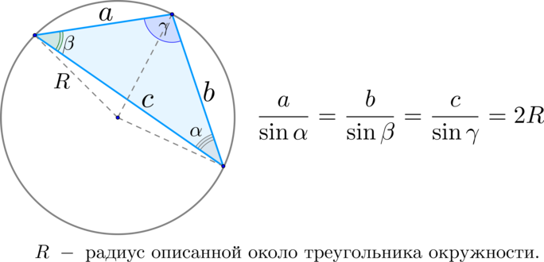

Доведення: побудуємо вписаний у коло кут , що опираеться на хорду a . Тоді побудуемо інший вписаний кут , одна зі сторін якого є діаметром описаного кола. А тепер скористаймося фактом , що кут , який опирається на діаметр - прямий , а також тим , що в прямоутному трикутнику sinA=a/c , де с - діаметр , тобто 2R.